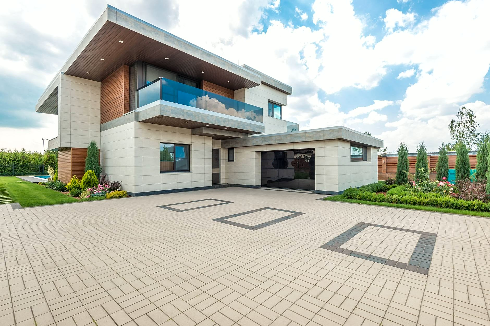
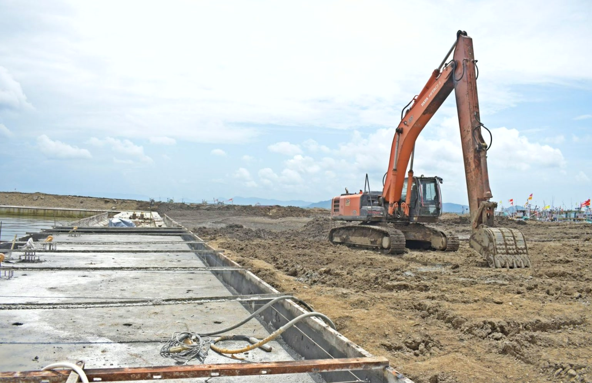
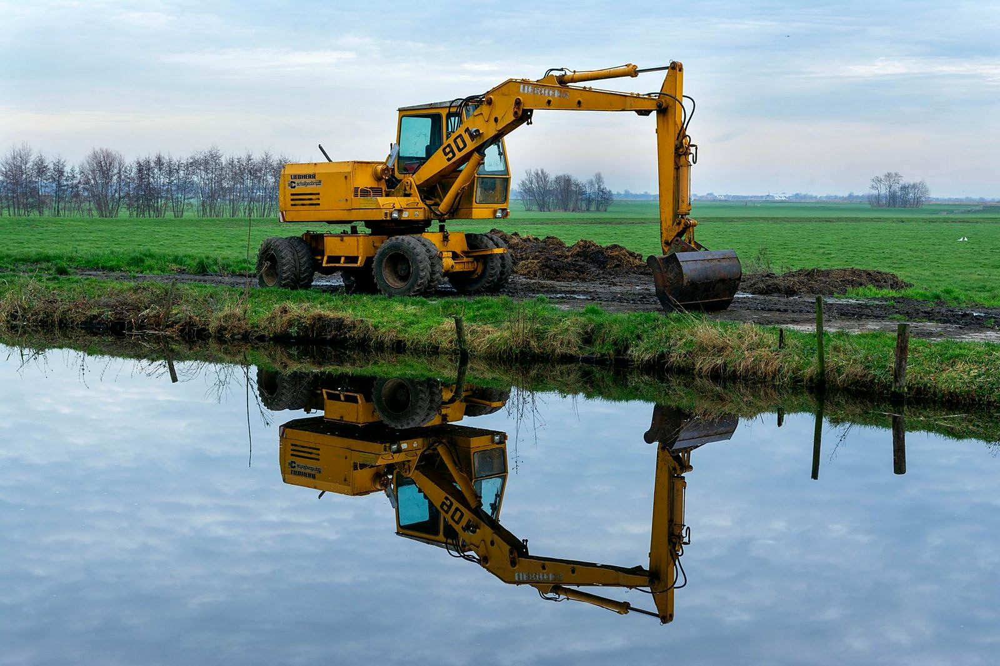
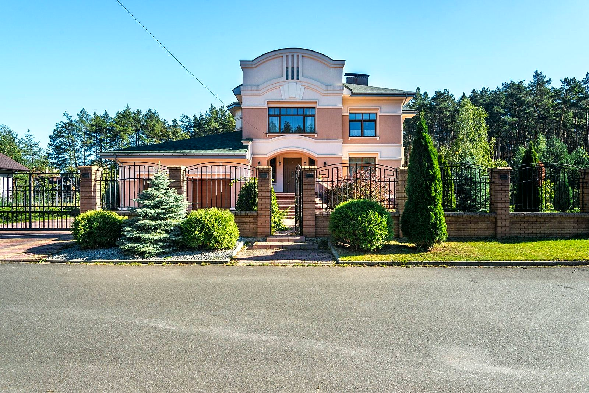
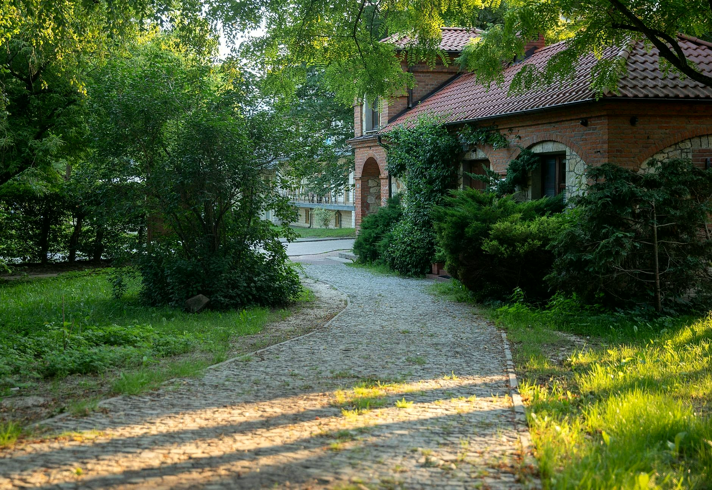
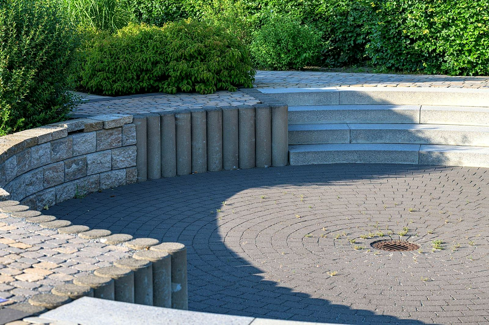

Od wykopu po gotową kostkę
Kopiemy, dowozimy kruszywo, robimy podbudowę i układamy kostkę. Koparka, wywrotka i bruk w jednej firmie.
- Wycena przed pracą
- Dojazd: Zbrosławice i okolice
- Koparka, wywrotka i bruk w jednej firmie
Złote Porządki to prace ziemne, transport i nawierzchnie z kostki w jednych rękach. Sami kopiemy, sami wozimy materiał i sami układamy, więc nie czekasz, aż jedna ekipa skończy, żeby przyjechała następna.


Wiesz, na czym stoisz - na każdym etapie
Od pierwszego telefonu do odbioru roboty - krok po kroku.
- 01
Oględziny
Przyjeżdżamy, mierzymy teren, sprawdzamy grunt i spadki. Od tego zależy, ile trzeba wykopać i jaka podbudowa będzie potrzebna.
- 02
Wycena
Podajemy cenę za całość: prace ziemne, transport, materiał i ułożenie. Bez dopisywania pozycji w trakcie.
- 03
Wykop i podbudowa
Koparka koryta teren, wywrotka wywozi urobek i przywozi kruszywo. Zagęszczamy warstwa po warstwie.
- 04
Kostka i odbiór
Układamy kostkę, docinamy przy obrzeżach, zasypujemy spoiny. Oglądamy efekt razem z Tobą.
Realizacje
Jak wygląda nasza praca
Sprzęt, prace ziemne i nawierzchnie z kostki. Tym zajmujemy się na co dzień.





Zakres prac
To, po co dzwonią do mnie najczęściej. Szczegóły i ceny niżej.
- Drogi i placeUtwardzanie dróg dojazdowych, placów i parkingów. Gruba podbudowa z kruszywa, która uniesie auta dostawcze i ciężki sprzęt.Wycena →
- Kostka brukowaPodjazdy, dojścia, tarasy i ścieżki. Układamy na porządnie zagęszczonej podbudowie, ze spadkiem i obrzeżami osadzonymi na betonie.Wycena →
- Transport wywrotkąDowóz kruszywa, piasku i ziemi, wywóz urobku z wykopu. Materiał przyjeżdża wtedy, kiedy jest potrzebny na budowie.Wycena →
- Prace ziemneWykopy, korytowanie pod kostkę, niwelacja terenu i wymiana gruntu. Koparka wjeżdża tam, gdzie łopatą zeszłoby tydzień.Wycena →
- Obrzeża i palisadyKrawężniki, obrzeża i palisady trzymają nawierzchnię w miejscu, żeby kostka po latach się nie rozjechała.Wycena →
- OdwodnieniaKorytka liniowe i odpływy przy podjazdach i garażach. Woda schodzi z nawierzchni zamiast stać w kałużach.Wycena →
Co mówią klienci
Najlepiej o pracy mówią ci, dla których ją zrobiliśmy: równa nawierzchnia, dotrzymany termin i kostka, która nie siada po zimie.
Dojeżdżamy do Ciebie
Świętoszowice, gmina Zbrosławice i okolice.
- Zbrosławice
- + okolice
Potrzebujesz fachowca? Wycenimy za darmo.
Napisz, co jest do zrobienia - obejrzymy na miejscu i wycenimy. Bez zobowiązań.
+48 695 470 793